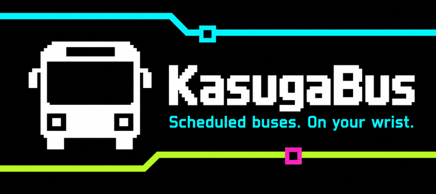
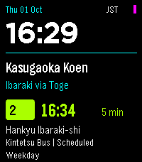
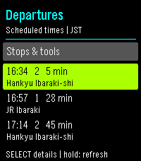
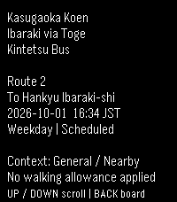

KasugaBus
Interactive watchapp · Version 1.0.0 · Emery / Pebble Time 2DailyNeon Express

Your next scheduled bus, on your wrist.
KasugaBus is an interactive bus timetable app for Pebble Time 2, covering six stop groups around Minami-kasugaoka in Ibaraki, Osaka. Its Neon Transit home combines a large clock with your next scheduled departure. Open the board and full details to check the boarding point, operator, route, direction and destination.
Browse the bundled Kintetsu and Hankyu timetables offline, select a boarding point and keep your usual favourites. Phone settings let you arrange favourites, choose display preferences and save your own walking allowances. Leave-by times use those allowances only in the explicitly selected Saved origin context.
Bus times and service dates use Japan time; the large clock follows your watch's local time. Calendar-aware lookup distinguishes weekday, Saturday and Sunday/public-holiday services and shows unconfirmed dates. These are scheduled departures, not live arrivals, bus locations or delay predictions.
Optional Nearby requests one phone location fix and ranks six verified Hankyu boarding poles by approximate straight-line distance. Kintetsu boarding points remain available through manual selection. Nearby does not estimate walking time or give roadside guidance.
The initial bundled timetable covers 1 October–27 December 2026. Source review is due 1 November; later service dates remain unconfirmed. Reviewed timetable revisions download through your connected phone without reinstalling the app. Automatic checks run daily when the app opens; Data status also offers a manual check. The bundled timetable remains usable offline. A successful feed check does not certify operator source freshness.
Initial release: broader physical GPS/settings/update-recovery checks, outdoor readability, battery observations and seven days of use remain outstanding. Basic Time 2 navigation and the bus icon have been observed; emulator and automated results are documented in the source repository.
Final release native Emery captures



Actual 200×228 native framebuffer captures of the final approved release, not mockups. These are the same approved source screenshots uploaded to the store. The banner is promotional artwork.